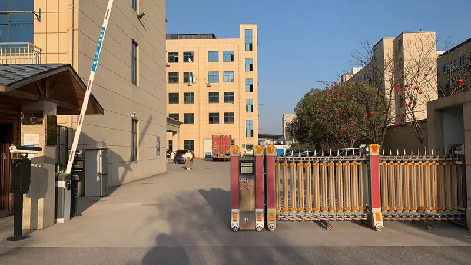

You do not need a finished tech pack to start
For a new B2B sock project, a clear brief is more useful than a perfect presentation. A logo file, a reference image or even a rough concept gives the discussion a starting point. The remaining details can be organized before sample approval.
GoodStartSocks is a factory-direct OEM and ODM custom sock manufacturer in Zhuji, Zhejiang, China. Our team supports projects from initial planning through sampling, bulk production and packaging discussion.
The seven details that make a brief useful
- Intended sock type: crew, ankle, knee-high, sports, grip, compression, fashion or gift style.
- Artwork and visual direction: logo files, colours, pattern ideas and preferred placement.
- Material direction: for example cotton blend, bamboo fibre, wool blend or performance yarn.
- Estimated quantity: our standard starting MOQ is 500 pairs; the final plan depends on the specification.
- Size range: the target sizes and expected pair split for each size group.
- Packaging: labels, bands, hang tags, bags, boxes or a gift-ready presentation.
- Delivery requirements: destination and target date, so the production discussion can be realistic.
For a broader view of construction and finishing choices, see our custom sock options page. If the height is still undecided, use the sock heights guide before finalizing artwork placement.
Plan for sampling before bulk production
Sampling helps confirm the material feel, size, colour direction, construction and logo placement before production moves forward. Our typical guide for sample preparation is about 3–7 days. After an approved sample, bulk production is typically about 30 days, subject to the final specification, order quantity, packing and production schedule.
Use real packaging references
Packaging can change the presentation of the same sock program. If you have a box, sleeve, ribbon, hang tag or gift-set idea, include it in the first brief. Explore our custom sock project examples for packaging and presentation inspiration. The examples show formats and do not imply named-brand affiliation.
Start the conversation
Send your artwork or reference image together with the seven points above. If some details are still open, that is fine: the first discussion can help identify the decisions needed before sampling.
Send Your Project Brief →